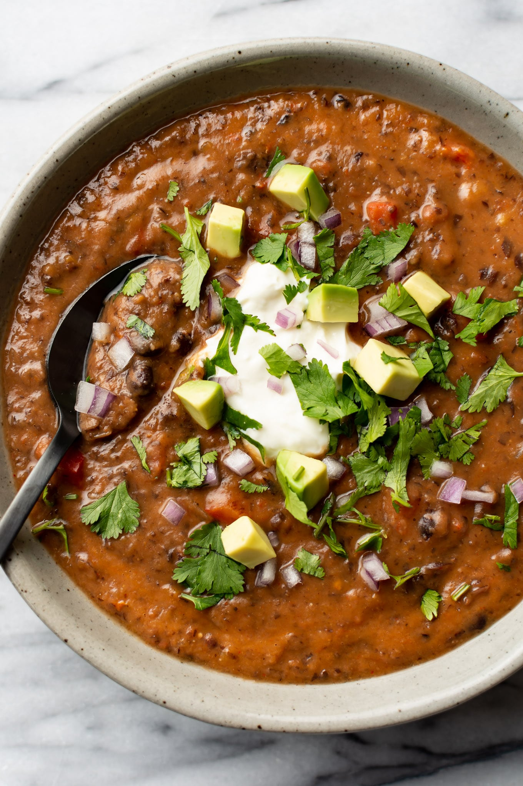

Black Bean Soup

Description
This hearty black bean soup is thick, spicy, and very easy to make. It's a simple and healthy dish, packed full of protein and flavor. It takes 15 mins to prep, 30 mins to cook.
Ingredients
- 1 tablespoon olive oil
- 1 large onion, chopped
- 2 carrots, chopped
- 1 stalk celery, chopped
- 4 cloves garlic, chopped
- 2 tablespoons chili powder
- 1 tablespoon ground cumin
- 1 pinch black pepper
- 4 cups vegetable broth
- 4 (15 ounce) cans black beans, undrained, divided
- 1 (15 ounce) can whole kernel corn
- 1 (14.5 ounce) can crushed tomatoes
Steps
- Gather all ingredients.
- Heat olive oil in a large pot over medium-high heat. Sauté onion, carrots, celery, and garlic in hot oil for 5 minutes. Season with chili powder, cumin, and black pepper; cook for 1 minute.
- Stir in vegetable broth, 2 cans beans, and corn. Bring to a boil.
- Meanwhile, process remaining 2 cans beans and tomatoes in a food processor or blender until smooth.
- Stir into boiling soup, reduce heat to medium, and simmer for 15 minutes.